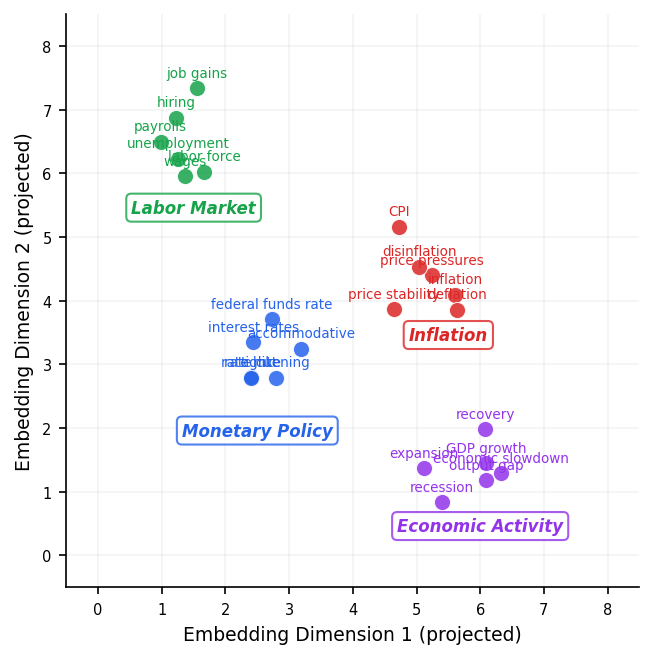
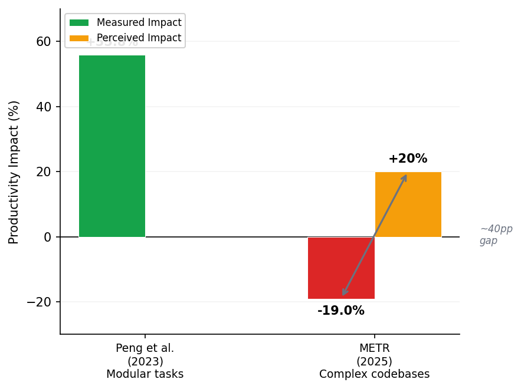
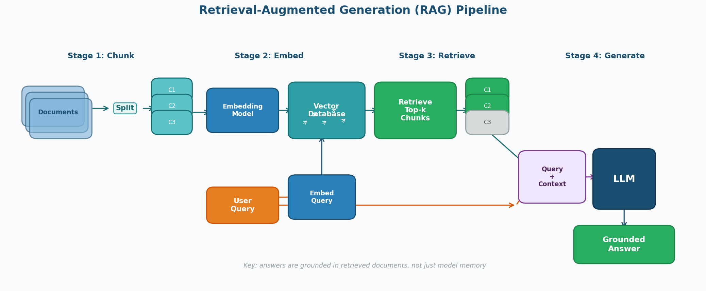

ECON 5200 • Causal ML & Applied Analytics • Chapter 25
Dr. Richeng Piao
Department of Economics
Northeastern University
LO1
Explain what LLMs, embeddings, and RAG are and how they differ from supervised ML
LO2
Use AI coding tools with effective prompt engineering for economic analysis
LO3
Evaluate AI-generated analysis using grounding checks and adversarial testing
LO4
Build a RAG pipeline grounded in Federal Reserve documents
In June 2023, attorney Steven Schwartz cited six federal court decisions in a brief against Avianca Airlines.
Every citation looked authoritative — case names, docket numbers, quoted passages.
Every single case was fabricated by ChatGPT.
The Economics Question
When generating plausible analysis costs almost nothing, the scarce resource is not production — it is verification.
How would you verify whether an AI-generated economic claim is true?
Section 1
What happens when you remove the target variable?
Every model you built (OLS, RF, DML) had:
LLMs break this pattern. Trained on billions of tokens to predict the next word. No explicit features, no target you designed.
Next-Token Prediction
P(wt+1 | w1, w2, ..., wt)
The model doesn't "know" anything — it has learned which words tend to follow other words. Stochastic parrot (Bender et al., 2021).
Ch 23 callback: same idea (text as numbers), much richer representation
TF-IDF (Ch 23)
Embeddings

An LLM generates: "US GDP grew 3.1% in Q4 2024."
What should you do FIRST?
C is correct. Option D is the trap — remember Mata v. Avianca. Asking an LLM for citations is like asking a witness for their own alibi.
You are writing a policy brief on Federal Reserve communications. Which would you trust more:
Your Ch 23 TF-IDF classifier
Transparent weights, reproducible
A prompted GPT-4 summary
Rich nuance, black box
Defend your choice with at least one methodological argument. (3 min)
Section 2
The Productivity Paradox
Autocomplete
Predicts next tokens as you type. df.groupby('state') → .agg({'income': 'median'})
Chat
Answers code questions. "How do I compute HC3 robust SEs?"
Agentic
Plans + executes multi-step tasks. "Download FRED data, merge, regress, plot"
Agentic mode: largest productivity gains and highest risks. Subtle errors propagate silently.
Peng et al. (2023) RCT: Developers with Copilot completed tasks 55.8% faster. Well-defined, modular tasks.
METR (2025) RCT: 16 expert developers on complex codebases. AI tools made them 19% slower (95% CI: 2%–39%).
But they believed they were 20% faster.
Perception-reality gap: ~40 pp

The METR study found expert devs were 19% slower with AI tools. What best explains this?
Both B and C are defensible — complementary explanations. D is undermined by the tight confidence interval.
Section 3
Retrieval-Augmented Generation
$67.4B
Global losses from AI hallucinations (2024 est.)
41%
Hallucination rate in finance queries (Kang & Liu, 2023)
58%+
Legal/regulatory query hallucination rate (2026)
Industry response: JPMorgan, Wells Fargo, Goldman Sachs initially banned ChatGPT. JPMorgan now has 450+ AI use cases and $1.3B annual AI budget. The shift: "ban AI" → "deploy AI responsibly" → RAG.

1. Chunk
Split docs into 200–500 token passages
2. Embed
Dense vectors via embedding model → ChromaDB
3. Retrieve
Find k most similar chunks to question
4. Generate
LLM answers from context, not memory
retrieved = argmaxd ∈ D sim(embed(q), embed(d))
Es et al. (2023) — Same precision logic from Ch 18
Faithfulness
Does the answer contain only claims supported by retrieved context?
Answer Relevancy
Does the answer actually address the question?
Context Precision@k
Are relevant chunks ranked at the top?
For economic applications, faithfulness is most critical — every claim must trace to an actual document.
In a RAG pipeline, what causes hallucination DESPITE having relevant documents?
B — The LLM is still a next-token predictor. It can go off-script even with grounded context. That's why "Based ONLY on the following excerpts" matters.
Your team has 10,000 pages of FOMC minutes (30 years). You need quarterly analysis of inflation language evolution.
Option A: RAG
Option B: Fine-Tune
Show of hands: RAG or Fine-Tune? Defend your choice.
Section 4
Human-in-the-Loop • Goodhart's Law Revisited
ReAct framework (Yao et al., 2023)
Caution: Agents can automate data pipelines, but cannot determine if your identification strategy is valid. Automate the mechanical steps; retain judgment for economic reasoning.
ECB Model (2026)
LLMs score Corporate Telephone Survey. Every AI score reviewed by an economist before entering official data. Strong AI-human correlation (MAD < 0.5).
Epistemic Cost
Anthropic (2025): AI users scored 17% lower on mastery quizzes. AI made tasks easier to complete but harder to learn from.
Goodhart's Law (Ch 2 callback): If you optimize your RAG pipeline for its faithfulness score, you may get technically faithful (every claim traces to a document) but economically meaningless output. Metrics are tools, not goals.
Section 5
Career Premium • Boston AI Economy
56%
Wage premium for verified AI skills (PwC 2025)
Up from 25% in 2024
73%
Engineering teams using AI tools daily
66%
Faster skills demand change in AI-exposed roles
Boston AI Economy:
State Street — ML/NLP in investment | Fidelity — AI Center of Excellence | Wayfair — coding agents | HubSpot — outcome-based AI pricing | Liberty Mutual — AI governance
1
LLMs are pattern matchers, not fact-checkers. Hallucination rates reach 41% in finance.
2
AI productivity is context-dependent. 55.8% faster (modular) vs 19% slower (complex) — with a 40pp perception gap.
3
RAG grounds AI in evidence. Chunk → Embed → Retrieve → Generate. Your documents become the model's evidence base.
4
Human-in-the-loop is mandatory. AI scores, humans verify. JPMorgan: 70% time reduction, zero analyst elimination.
5
56% wage premium rewards AI use, not AI knowledge. Delegate syntax, retain judgment.
1. In one sentence: What is the difference between an LLM's parametric memory and RAG's non-parametric memory?
2. One thing I'm still confused about: (open-ended)
Expected: "Parametric memory is baked into the model's weights during training and cannot be audited; non-parametric memory is an external document store that can be updated, searched, and cited."
Building a RAG Pipeline for FOMC Analysis
Part 1 (25 min)
Build the pipeline: chunk FOMC corpus, embed with MiniLM, store in ChromaDB, retrieve
Part 2 (20 min)
Adversarial testing: temporal precision, out-of-scope, semantic vs lexical
Part 3 (15 min)
Evaluate: Context Precision@k, faithfulness proxy metric
Libraries: langchain, chromadb, sentence-transformers
Dataset: Same FOMC corpus from Chapter 23 — TF-IDF → embeddings → RAG